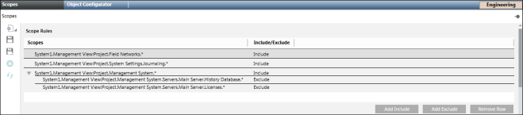

Configure the Scope Rules of the Scope Definition
Scope Rules allow you to configure Scope Rule Include and Exclude nodes in a scope definition. A Scope Rule can only add more objects to a Scope. It cannot remove objects from a Scope that were added by another rule of the Scope definition.
- In the Scopes tab, use the Scope Rules section to specify the subtrees (hierarchies of objects) that you want to include in the scope definition. Do one or more of the following:
- Add an entire subtree to the Scope: Drag-and-drop a node from the System Browser into an empty space in the Scope Rules section. You can include multiple nodes in a Scope Rule by selecting the nodes in the System Browser using CTRL or SHIFT and thereafter adding them to an empty space in the Scope Rules section using drag-and-drop. For selecting multiple nodes, ensure that you select the Manual navigation checkbox.
- The selected path is added to the Scope Rules.
- Exclude portions of a previously-added subtree: Select a path in Scope Rules, click Add Exclude, and from System Browser drag-and-drop a node belonging to that path into the empty exclude row.
- The objects in this portion of the previously-added hierarchy will now be excluded from the Scope.
